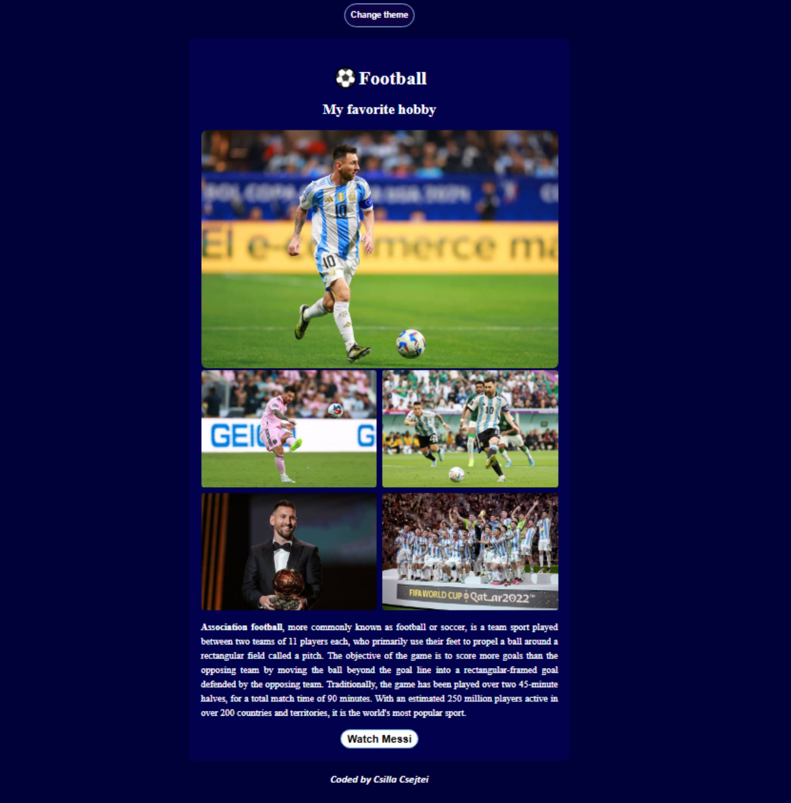
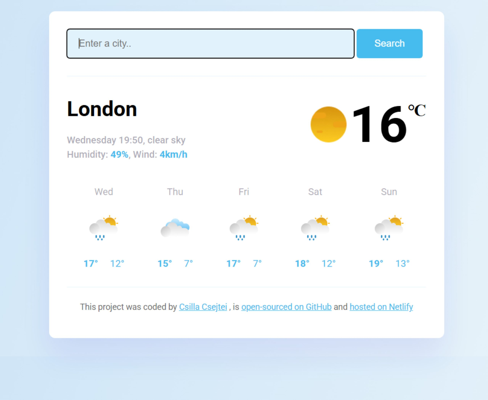

Home
About
Work
Contact
Csilla Csejtei
Web Developer
Check out some of my featured projects below

Hobby Webpage
I entered the world of front-end development by gaining some knowledge in HTML, CSS, and JavaScript. I used my knowledge of these languages, along with my new skills in VS Code, to build a landing page about football. The page utilizes JavaScript functions to create user interaction.

Weather app
I built a Vanilla JavaScript weather app in SheCodes Plus, an advanced 8-week JavaScript coding workshop. Building upon my previously-gained knowledge, I also became skilled in Bootstrap, API’s, real-life development workflow, hosting, and advanced JavaScript. I combined all of these skills to create a fully-functioning weather app.